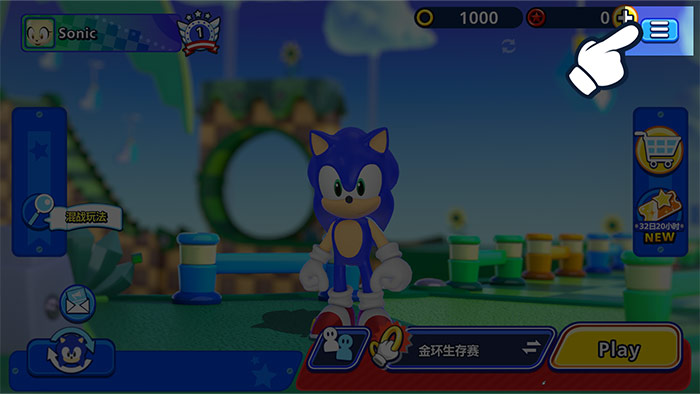
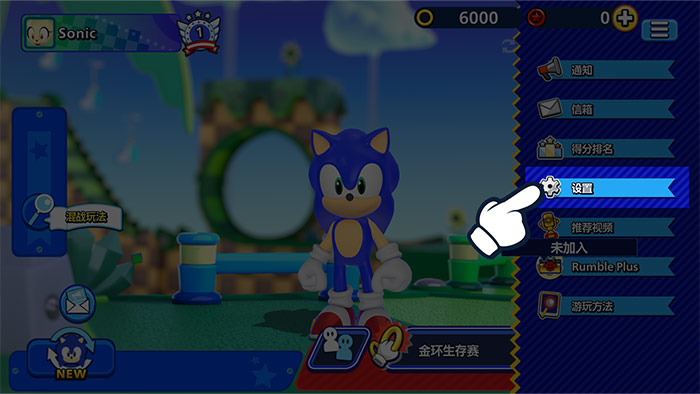
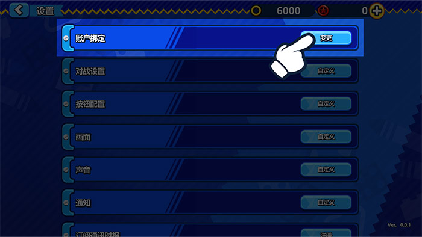
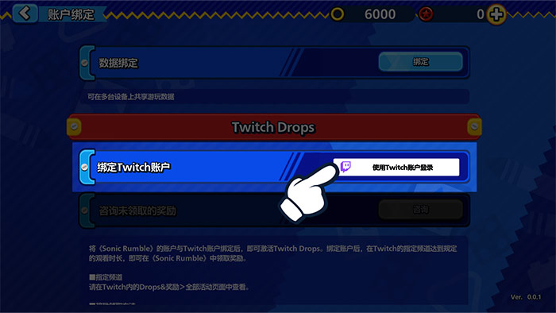
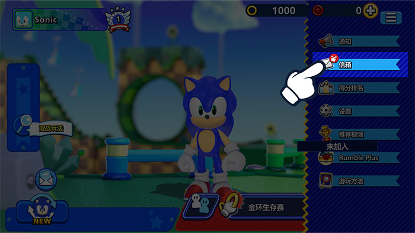

Twitch掉宝观看直播，
Twitch掉宝观看直播，
赢得游戏内奖励！
立即关联Twitch账户！
如何关联账户
1在《Sonic Rumble》中点击“菜单”按钮。

2前往“设置”。

3点击“账户绑定”。

4选择“Twitch掉宝”，然后选择“使用Twitch登录”以登录你的Twitch账户。

5这样你的Twitch账户就会成功关联《Sonic Rumble》账号。
如何领取奖励
1在《Sonic Rumble》中点击“菜单”按钮。

2前往你的“信箱”查看奖励。

*如果奖励于游戏维护期间发送至你的信箱，领取奖励时可能会出现问题。
如果出现此类问题，请前往：菜单 > 设置 > 账户绑定 > Twitch掉宝，然后点击“领取”按钮，即可重新将奖励发送至你的信箱。
常见问题解答
- Q什么是Twitch掉宝？
- A这是一种活动，只要在Twitch观看直播就能赢得游戏内奖励。
只需将《Sonic Rumble》账号与Twitch账户关联即可参加。 - Q怎么才能领取奖励？
- A激活Twitch掉宝功能，然后观看符合条件的《Sonic Rumble》直播即可开始填充掉宝进度条。进度条填满后就能领取奖励了。
- Q怎么查看我当前有没有参与Twitch掉宝活动？
- A点击此处访问Twitch库存页面，即可查看正在参与的所有Twitch掉宝活动，以及已经领取的奖励。
- Q掉宝奖励需要多长时间才能到账？
- A奖励将在24小时内发送至你的游戏内信箱。
如果你想在收到奖励后取消账号关联，请务必先在《Sonic Rumble》账号中领取奖励。 - Q如果我有多个《Sonic Rumble》账号，可以使用所有账号分别领取奖励吗？
- ATwitch掉宝奖励只能领取一次。每个Twitch账户也只能同时关联一个《Sonic Rumble》账号。
同一类型的奖励在每个《Sonic Rumble》账号和Twitch账户上只能领取一次。